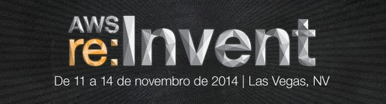

A Guinux é presença confirmada na maior conferência global de computação na nuvem realizada pela Amazon a re:Invent 2014 que acontecerá em Las Vegas nos dias 11-14 Novembro de 2014. Seremos uma das primeiras empresas em saber sobre novos produtos e funcionalidades em nuvem lançadas na AWS re:Invent e aprenderemos através de 200+ seções técnicas as melhores práticas e 
Dessa forma estaremos ainda mais consolidados no segmento Cloud, além do já sucesso Google Apps for Work e em breve através do Amazon Web Services(AWS) nossos atuais ou futuros clientes poderão com a Guinux migrar totalmente ou parcialmente seus servidores e aplicações locais para a infraestrutura de nuvem segura e moderna da Amazon.
Saiba mais em: https://reinvent.awsevents.com
re:Invent Highlights